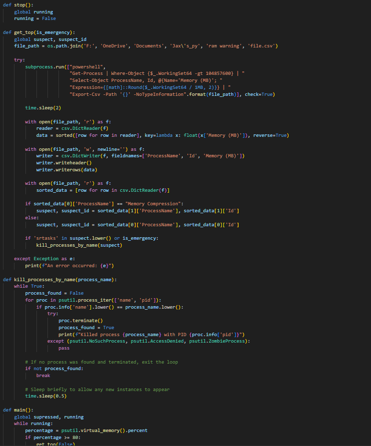

Experience And Projects
Experience
Setting up, running, updating, and otherwise maintaining dedicated game servers that saw over 20 concurrent users at one given moment. Setting up a network of virtual machines and servers with group policy, a firewall, and network rules through the use of a domain controller. Creating an executable with several hundred lines of code that makes use of different APIs and attributes of another program for use in a larger program. Created a program to run on my personal computer on boot that monitors certain levels to make sure that it's all in normal range, and to take action if something goes wrong without me noticing. Changing values in the registry editor for many different reasons to help fix an issue or make something work. Helping others with various sorts of tech related problems on different kinds of devices including removing malware and fixing physical component issues.
Projects
Random Item Minigame
This is a piece of software that I wrote that hooks into a game that I play to listen for a couple commands that I wrote. Go, Halt, and ricsettings. When the Go command is sent, the program executes a list of commands to start the game and setup the settings, and then uses a custom random generator to randomly give each player a random item that they can use to kill the other player or escape from someone coming after them. Every 15 seconds by default it gives you a new drop from the massive list of items that could be very useful in a fight. I have developed many different features and updates to capabilities in settings for more customizability for the user.
Maintenance Program
I have this program that runs on my computer in the background where it checks periodically through the list of tasks running on my computer. I made this because I noticed that my computer would often crash because of a system task taking up too much memory. To combat this, the program looks for the task that is using the unusual amount of memory and kills it before it crashes my computer. This is only a Band-Aid fix for now, but I will say that it has worked quite well. Once I fix the root issue I will not need or use this program. However the way it works, it doesn't really effect me because it doesn't use a lot of system resources to run, so it should always work without issue to performance.
Keyboard Logger/Monitor
This program was something I made for my little brother to make sure that he wasn't looking up anything that he shouldn't be. This program checks through the words that he types and compares it to a wordlist that I found and added onto. If any of the words in the wordlist are found in the file it creates whenever he types, it will promptly send an email to me, alerting me to the word, as well as the context in which it was typed.
